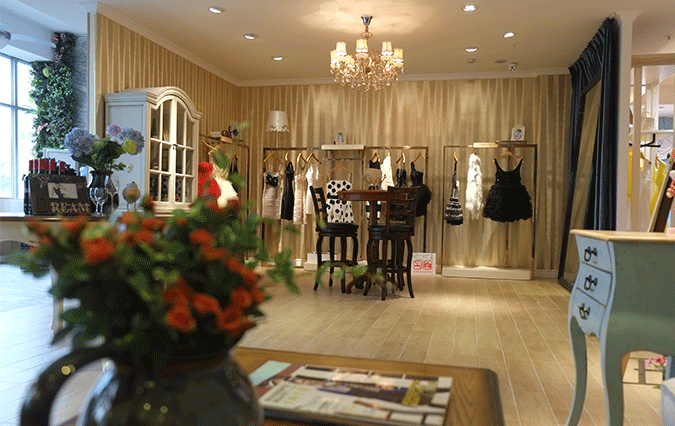

La Danum 30%off

MY TENO品牌自登陆中国服装市场以来，一直致力于高级服装品牌的发展，坚持以其最时尚的创意/奢华精致的剪裁，创造了MY TENO的辉煌。 科学的管理与前端的时尚理念，使世界著名品牌公司Italian LAB MILANO公司的侧目，Italian LAB MILANO公司是意大利著名的服装品牌管理公司，旗下设计团队与众多的世界著名品牌有着紧密的合作。在同MY TENO品牌的合作中，对中国市场有了更深度的了解，对MY TENO品牌取得成就非常赞赏和肯定。 通过长时间的默契合作，Italian LAB MILANO公司对MY TENO品牌在中国市场深度拓展给予了很高的评价，双方达成了对中国高级成衣市场的全盘战略合作开发，制定整体市场策略，组成由世界著名服装大师Mr.Ioannis Voinis为主的精英团队，通过MY TENO在中国市场的网络平台和影响力，推出la danum［华贵系列］，使最前沿的创意意念与精湛的意大利工艺，让中国的社会精英更近的感受到世界顶级服装所展示的魅力风采。